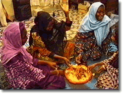

Tom Payne

El hausa es una de las principales lenguas de África Occidental. Lo hablan como primera lengua unos 22,000,000 de personas, y como segunda lengua (o lengua «comercial») unos 16,000,000 más. La mayoría de los hablantes de hausa vive en Nigeria. Nigeria es uno de los países con mayor diversidad lingüística de la tierra. La mayoría de los nigerianos habla al menos tres lenguas: una lengua del hogar, una lengua comercial y el inglés. Hoy en Nigeria se hablan 470 lenguas indígenas distintas. Todos los herreros de África Occidental son hombres.
Las siguientes son algunas oraciones en hausa, con sus traducciones. Faltan algunas de las oraciones en hausa y algunas de las traducciones. Tu tarea es completar las oraciones que faltan, ya sea en hausa o en español.